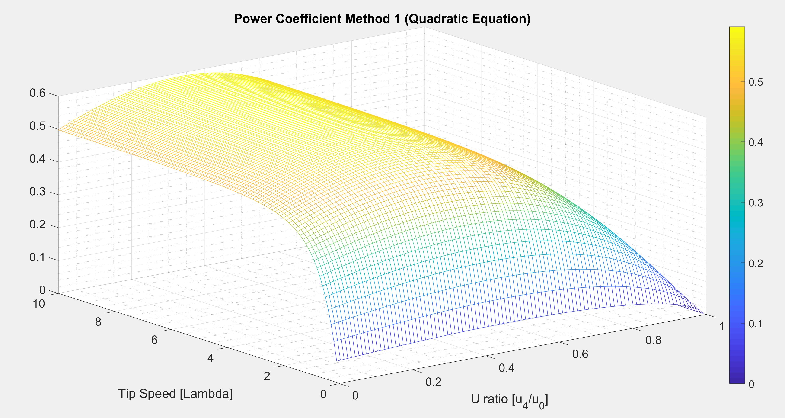
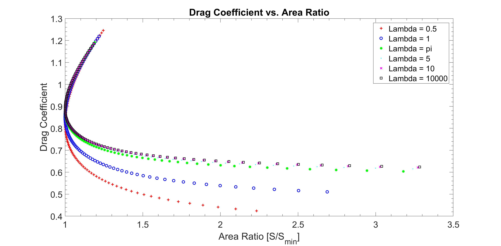
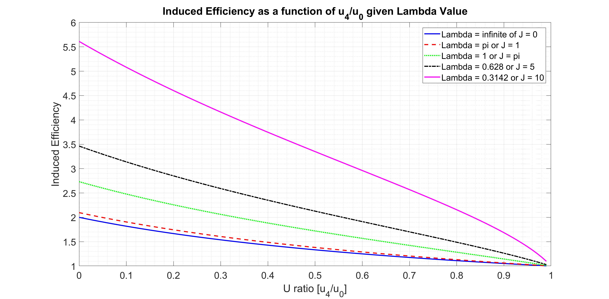

Background
Stuff about my background
Education
University: Cal Poly SLO
Mechanical Engineering, M.S.
- College: College of Engineering
- GPA: 3.87
- 2020-Present
- Expected Graduation Date: March 2021
Mechanical Engineering, B.S.
- College: College of Engineering
- GPA: 3.6
- 2015-2020
- Concentration: General
Software
- Matlab
- Solidworks
- EES
- CASESAR II
- ADAMS
Coursework
- Mechanics of Materials
- Thermodynamics I/II
- Heat Transfer
- Advanced Heat Transfer
- Thermal System Design
- Nuclear Power Plant Design
- Design for Strength & Stiffness
- Measurement and Data Analysis
- Design of Machinery
- Statics/Dynamics
- Fluid Mechanics I/II
- Viscous Flow
- Compressible Flow
- Mechanical Control Systems
- System Dynamics
- Mechanical Vibrations
- Machinery Vibration and Rotor Dynamics
- Senior Design Project
Thesis
My thesis is related to Actuator Disk Theory in which I am rederiving the equations
for use as an energy Extractor. The equations I am deriving will help model and predict
certain parameters of importance which include Drag, Power output, and efficiency. These parameters will be determined
for ducted and un-ducted cases with the inclusion of losses due to swirl and viscous forces.



Some applications for this work can be seen in need for energy extraction from fluids such as air or water.
These equations can be used to help model and predict performance characteristics for wind/water turbines or Ram-air turbines.
Work Experience
Engineering Intern
Chevron, Richmond CA, 2020
The summer of 2020, I was an intern for Chevron in a virtual environment. During this internship I worked with a group of interns of different disciplines to complete real-world projects. Through collaboration and teamwork, we completed projects and gained deeper insight into the oil-refining business.
Pipe Stress Analysis Intern
Chevron, Richmond CA, 2019
The summer of 2019, I was a pipe stress analysis intern for Chevron at the Richmond Refinery. There I completed pipe stress analysis for various piping systems within the refinery. I learned when pipe stress analysis was needed and how to perform analysis using CAESAR II. I learned which load cases to analyze the piping systems with and methods used to reduce stresses in piping systems. I worked closely with Design Engineering and other cross functional groups to determine solutions that followed applicable codes and standards while balancing the business needs. I reported out to the leadership team at the end of the internship on my project results and findings.
Designs Engineering Intern
Chevron, Richmond CA, 2018
The summer of 2018, I was a Designs Engineering intern for Chevron at the Richmond Refinery. There I completed Engineering Work Orders where I determined the proper engineering instruction and documentation to change or upgrade piping systems in the refinery. I worked closely with many cross-functional groups to put together work packages that conformed with best practices and standards while balancing the business needs. Through this internship I gained a deeper understanding of the gas and oil refining business and improved my technical and non-technical skills. At the end of the internship, I reported out to the leadership team on my project results and findings.
Precision Manufacturing Lab Intern
NTUST, Taipei Taiwan, 2017
The summer of 2017, I was a Precision Manufacturing Lab Intern at The National Taiwan University of Science and Technology (NTUST). Here I worked with graduate students to prepare for and run experiments and analyze the results. Through this process I helped them compete their thesis’ while also completing a project of my own which was to incorporate ionize air into the surface roughness measuring process of a polishing pad. Through this internship I learned about and practiced different precision manufacturing techniques such as Chemical Mechanical Polishing and Wire-sawing and gained exposure to different precision manufacturing instruments.